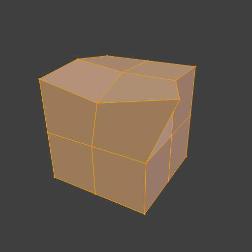
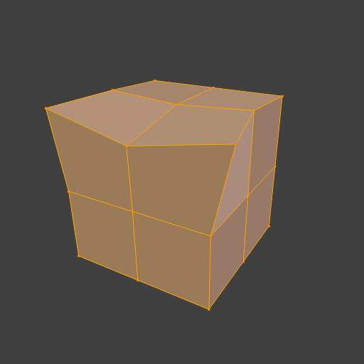
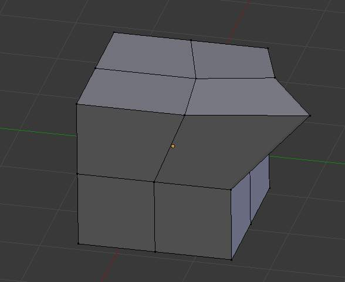
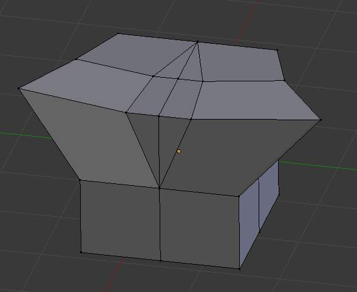

镜像 编辑¶
X-镜像¶
参考
The X-mirror option of the Mesh Options panel allows you edit both “sides” of your mesh in a single action. When you transform an element (vertex, edge or face), if there is its exact X-mirrored counterpart (in local space), it will be transformed accordingly, through a symmetry along the local X axis.
Topology 镜像¶
The Topology 镜像 option is available in the while in 编辑模式
Note
For Topology 镜像 to work the X 镜像 option must be enabled.
When using the X 镜像 option to work on mirrored Mesh 几何体 the vertices that are mirrored must be perfectly placed. If they are not exactly positioned in their mirror locations then X 镜像 will not treat those vertices as mirrored. This can be annoying because often the out of position vertices are only very slightly out of position.
Topology 镜像 tries to solve this problem by determining which vertices are mirrored vertices not only by using their positions but also by looking at how those vertices are related to others in the Mesh 几何体. It looks at the overall Mesh 几何体 topology to determine if particular vertices will be treated as mirrored. The effect of this is that mirrored vertices can be non-symetrical and yet still be treated as mirrored when X 镜像 and Topology 镜像 are both active.
Note
The Topology 镜像 functionality will work more reliably on Mesh 几何体 which is more detailed. If you use very simple Mesh 几何体 such as a Cube or UV Sphere for example the Topology 镜像 option will often not work.
例子¶
For an example of how to use Topology 镜像 open up a new Blender scene, then delete Blender’s default cube and add a Monkey Object to the 3D视图.
- Press
Tabto put the Monkey Object into 编辑模式. - With the X 镜像 option disabled move one of the Monkey Object’s vertices slightly.
- Then Turn X 镜像 option on again but leave Topology 镜像 disabled
- If you now move that vertice again X 镜像 will not work and the mirrored vertices will not be altered.
- If you then enable Topology 镜像 and move the same vertices again, then X 镜像 should still mirror the other vertice, even though they are not perfectly positioned.
Snap to Symmetry¶
参考
The Snap to Symmetry tool works on meshes which are mostly symmetrical but have vertices which have been moved enough that Blender does not detect then as mirrored (when x-mirror option is enable for example).
This can be caused by accident when editing without x-mirror enabled. Sometimes models imported from other applications are asymmetrical enough that mirror fails too.
- Direction
- Specify the axis and direction to snap. Can be any of the three axes, and either positive to negative, or negative to positive.
- Threshold
- Specify the search radius to use when finding matching vertices.
- Factor
- Support for blending mirrored locations from one side to the other (0.5 is an equal mix of both).
- Center
- Snap vertices in the center axis to zero.

Before Snap to Symmetry. |

After Snap to Symmetry. |
{kind=link}
{kind=link}
Symmetrize Mesh¶
参考
The Symmetrize tool is a quick way to make a mesh symmetrical. Symmetrize works by cutting the mesh at the 轴心点 of the object, and mirroring over the geometry in the specified axis, and merges the two halves together (if they are connected)
- Direction
- Specify the axis and direction of the effect. Can be any of the three axes, and either positive to negative, or negative to positive.

Mesh before Symmetrize. |

Mesh after Symmetrize. |
{kind=link}
{kind=link}
镜像ing 几何体¶
See 镜像 for information on mirroring, which allows you to flip geometry across an axis.
See also
The conditions for X-mirror to work are quite strict, which can make it difficult to use. To have an exact mirrored version of a (half) mesh, its easier and simpler to use the 镜像 modifier